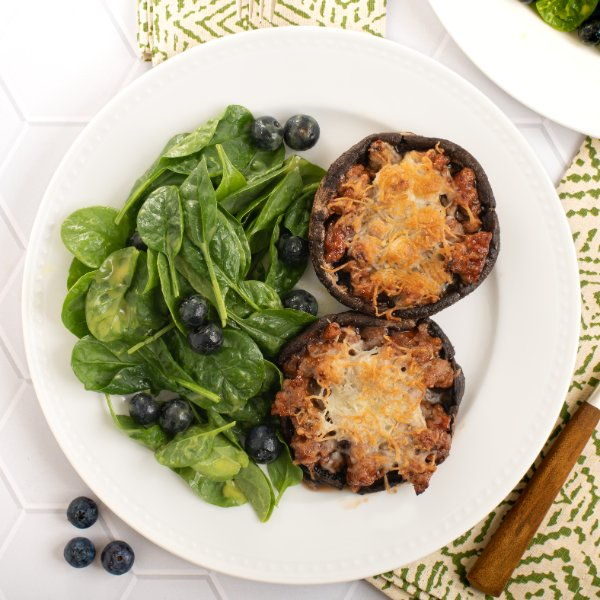

BBQ Pork Stuffed Portobellos with Cheese & Blueberry-Spinach Salad

Total Time
25 min
Nutrition (Per Serving)
695.7 kcalCalories
42.6 gProtein
39.6 gCarbs
42.4 gFat
Full nutrition table
| Calories | 695.7 kcal |
| Total fat | 42.4 g |
| Saturated fat | 12.8 g |
| Trans fat | 0.4 g |
| Cholesterol | 138.1 mg |
| Sodium | 899.4 mg |
| Carbohydrates | 39.6 g |
| Fiber | 4.6 g |
| Sugars | 26.9 g |
| Protein | 42.6 g |
| Potassium | 1403.6 mg |
| Calcium | 285.8 mg |
| Iron | 3.7 mg |
| Vitamin A | 376.6 IU |
| Vitamin C | 14.5 mg |
| Vitamin D | 45.8 IU |
Cookware
Ingredients
- 1 (5 oz) pkgbaby spinach
- 1 (6 oz) pkgblueberries
- ¼ cuphoney mustard dressing
- 1 ½ lblean ground pork
- 8 capsportobello mushrooms
- 1 cupshredded cheese, Italian blend
- barbecue sauce
- black pepper
- extra virgin olive oil
- Italian seasoning
- salt
Steps
- Preheat oven to broil on high and position rack in the upper third of the oven.
- Wash and dry the fresh produce. (Skip the spinach if it came pre-washed.)8 caps portobello mushrooms
1 (5 oz) pkg baby spinach
1 (6 oz) pkg blueberries - Remove stems from portobello mushrooms and carefully scrape out the gills. Transfer to a baking sheet pan, rub with oil, and season with spices on both sides; arrange cap-side up.2 tsp extra virgin olive oil
1 tsp Italian seasoning
½ tsp salt
½ tsp black pepper - Place mushrooms in the oven and broil until starting to soften, about 6 minutes. Remove from oven.
- Meanwhile, preheat a large skillet over medium-high heat.
- Once the skillet is hot, add pork and cook, breaking the meat apart with a spoon, until browned and crumbly, 4-5 minutes.1 ½ lb lean ground pork
- When the pork is done, add barbecue sauce, stir to combine, and remove from heat.⅔ cup barbecue sauce
- Using tongs, carefully flip the mushrooms, cap-side down. Fill with BBQ pork and top with cheese.1 cup shredded cheese, Italian blend
- Return baking sheet to the oven and continue to broil until the mushrooms are soft and cheese is melted, 4-5 minutes more. Remove from oven.
- Meanwhile, place spinach, blueberries, and dressing in a medium bowl. Toss to combine the salad.¼ cup honey mustard dressing
- To serve, divide stuffed mushrooms and salad between plates. Enjoy!